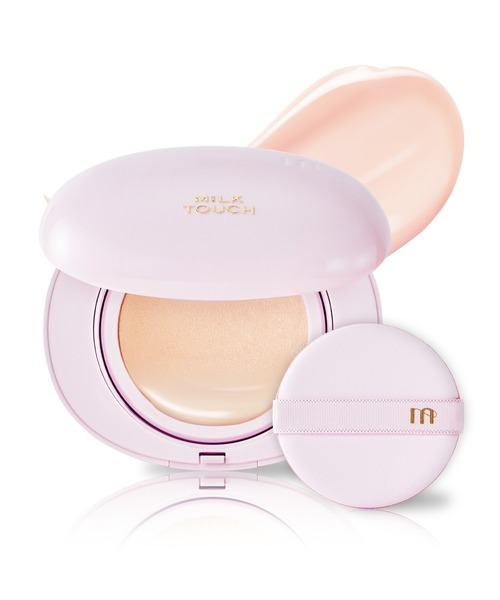
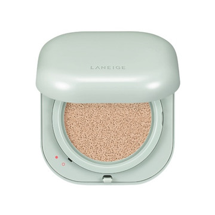
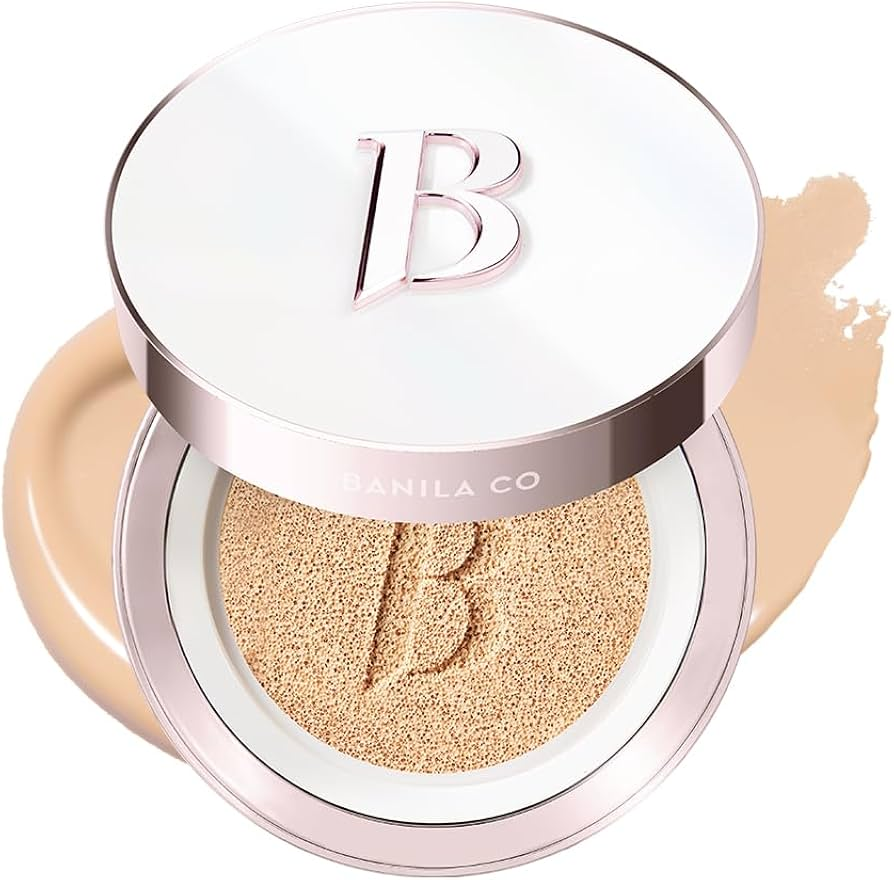
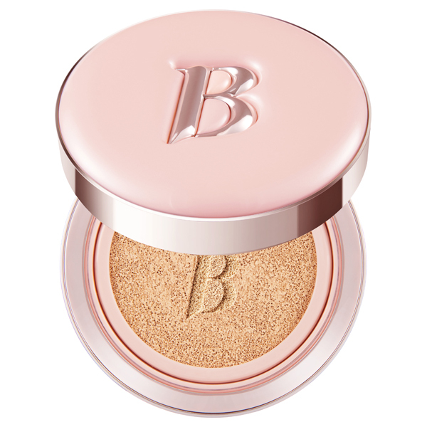
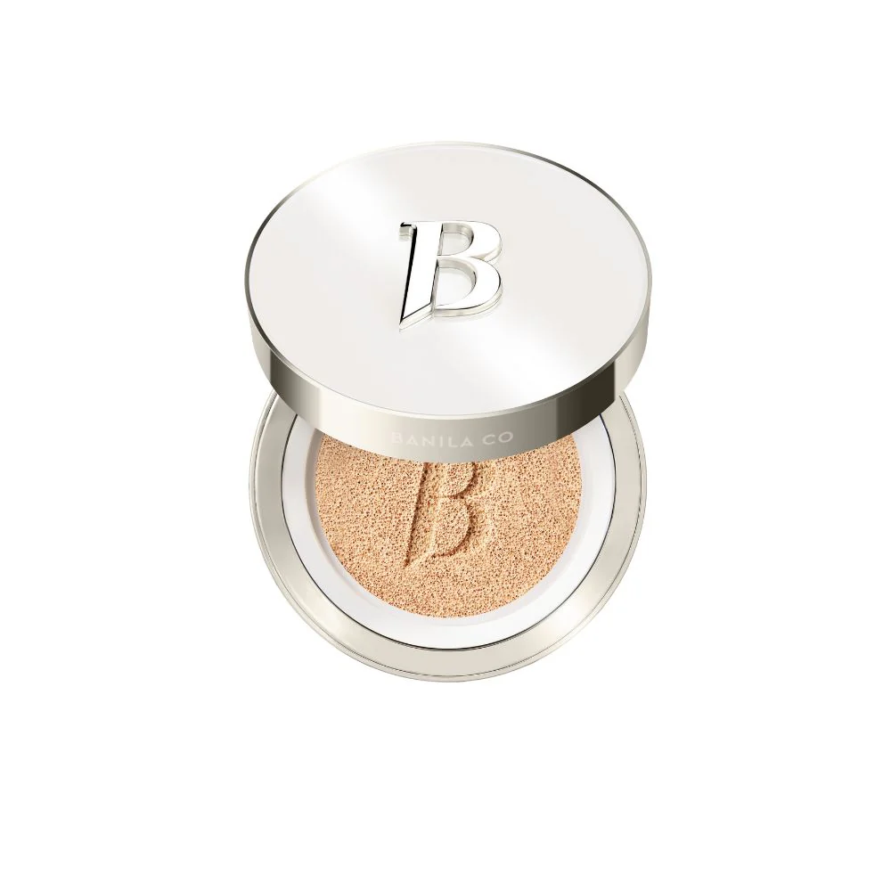

Milk Touchオールデイ スキン フィット ミルキー グロウ クッション
バランス系 × ナチュラルな厚みのある仕上がり
推しポイント：
- 瑞々しく柔らかなテクスチャーで、重みがなく薄く均等にカバーされる
- 密着力がありつつ薄づきなので口周りのヨレが減った
- 長時間使用しても肌荒れやニキビの悪化をあまり感じない
感想：密着力と薄づきのバランスが良く、毎日使いたくなる仕上がり。カバー力と肌への優しさの両立が特に優秀。
脂性肌気味の混合肌が選んだ、本当に納得したクッションファンデーション
肌質：脂性肌気味の混合肌
悩み：毛穴・ニキビ・皮脂
重視ポイント：崩れにくさ・崩れ方 / メイク直後の仕上がり / 肌荒れしにくさ / カバー力
毎日のメイクで本当に使えると感じた5つの製品を、正直にレビューしました。

Milk Touchバランス系 × ナチュラルな厚みのある仕上がり
推しポイント：
感想：密着力と薄づきのバランスが良く、毎日使いたくなる仕上がり。カバー力と肌への優しさの両立が特に優秀。

Laneigeマット系 × 高カバー・耐久性重視
推しポイント：
感想：カバー力と耐久性は高水準。ナチュラルさより持ちを優先したい日向け。

Banila Co.保湿系 × しっかりカバー寄りのグロウ仕上がり
推しポイント：
感想：カバー力と自然さを両立させたいが、重さが気になる場合あり。

Banila Co.リキッド系 × ツヤ寄りのナチュラルカバー
推しポイント：
感想：モイスチャーに近い使用感。重さが気にならなければ仕上がりは良好。

Banila Co.マット系 × 高カバーだが硬めのテクスチャー
推しポイント：
感想：カバー力は最高評価だが、仕上がりの自然さや毛穴カバーでは扱いが難しい場面がある。